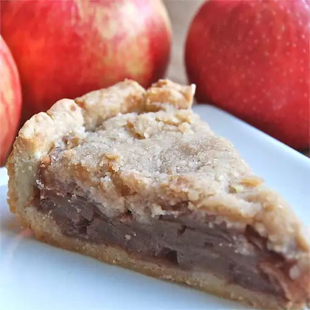

Chef John's Chocolate Lava Cake
Rating: 4.2 | 240 Reviews | 88 photos
Legend has it that the first chocolate lava cake was the result of a major catering disaster. The dessert for this particular event was to be individual chocolate cakes, but someone took them out of the oven too soon, and the centers were not cooked enough and still liquefied. There was no time to take them off the plates and bake them more, so the chef simply had his wait staff introduce the dessert as chocolate "lava" cakes — brilliant!
Ingredients
- 1 (9 inch) deep dish pie crust
- 5 cups apples - peeled, cored and thinly sliced
- ½ cup white sugar
- ¾ teaspoon ground cinnamon
- ⅓ cup white sugar
- ¾ cup all-purpose flour
- 6 tablespoons cold butter
Directions
- Preheat the oven to 400 degrees F (200 degrees C.)
- Arrange apple slices in unbaked pie shell. Mix 1/2 cup sugar and cinnamon; sprinkle over apples.
- To make the crumble topping: Place 1/3 cup sugar and flour in a bowl. Cut in cold butter with 2 knives or pastry blender until the mixture resembles coarse crumbs; spoon mixture over apples.
- Bake in preheated oven until apples are soft and top is lightly browned, about 40 minutes.